PERSONAGENS
Principais personagens da obra
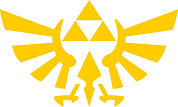
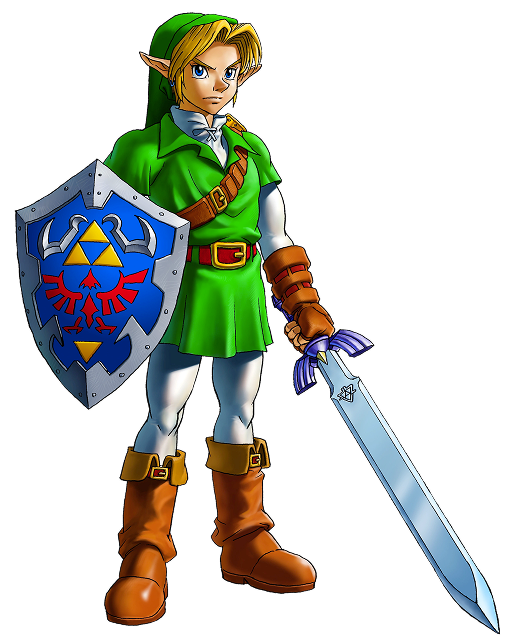
LINK
Um jovem da Floresta Kokiri destinado a se tornar o lendário Herói do Tempo. Armado com a Espada Mestra e guiado pela fada Navi, Link viaja no tempo para impedir Ganondorf de conquistar Hyrule. Apesar da pouca idade, ele demonstra coragem e determinação extraordinárias.
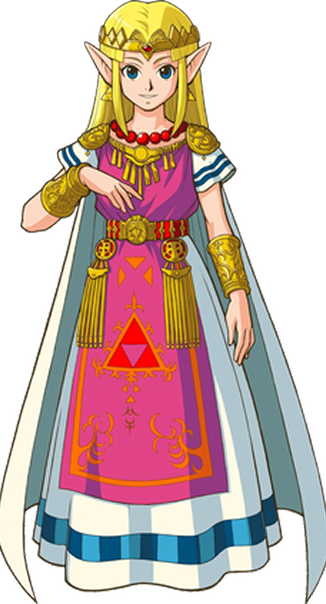
ZELDA/SHEIK
A sábia princesa de Hyrule que possui poderes proféticos. Após a tomada de Ganondorf, ela se disfarça de Sheik, uma misteriosa guerreira Sheikah, para ajudar Link nas sombras. Ela possui a Triforce da Sabedoria e desempenha um papel crucial no selamento de Ganondorf.
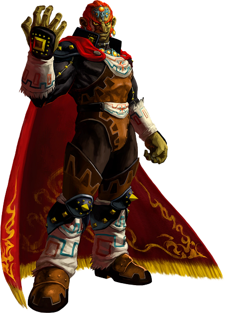
GANONDORF
O astuto líder dos ladrões Gerudo que busca a Triforce para governar Hyrule. Ele manipula o Rei de Hyrule e assume o reino durante o sono de sete anos de Link. Possuindo a Triforce do Poder, ele se transforma no monstruoso Ganon em sua forma final.
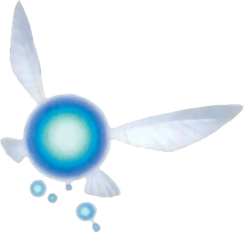
NAVI
Uma fada designada a Link pela Grande Árvore Deku. Ela serve como guia de Link ao longo de sua aventura, fornecendo dicas e informações sobre inimigos e locais. Seu famoso “Hey! Listen!" se tornou icônico na cultura dos games.
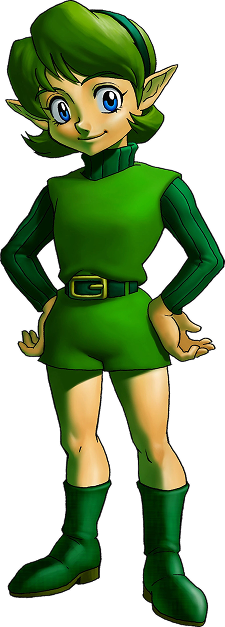
SARIA
Amiga de infância de Link da Floresta Kokiri. Ela dá a Link a Ocarina das Fadas e continua sendo uma de suas amigas mais próximas. Ela desperta como a Sábia da Floresta, ajudando Link em sua jornada para derrotar Ganondorf, apesar de estar presa no Templo da Floresta.
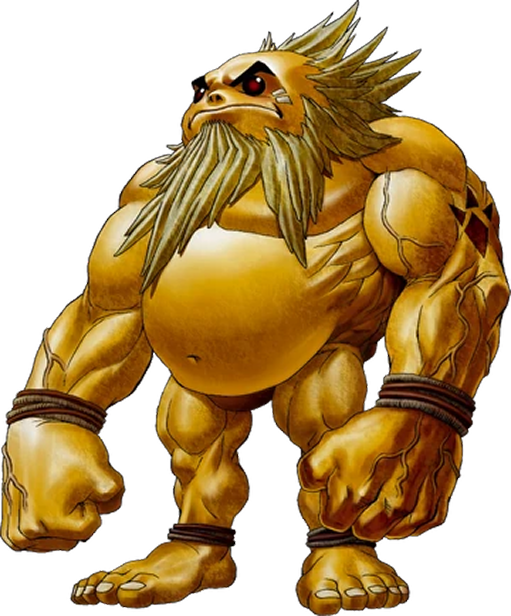
DARUNIA
O líder dos Gorons na Montanha da Morte. Inicialmente rude e perturbado pela crise de Rubi, ele se aproxima de Link após ouvir a Canção de Saria. Ele desperta como o Sábio do Fogo e nomeia Link seu irmão juramentado, chegando a batizar seu filho em sua homenagem.
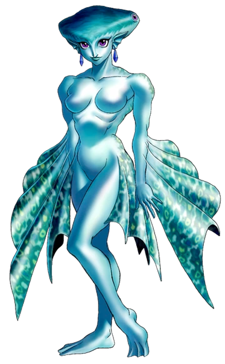
RUTO
A espirituosa princesa dos Zoras. Ela se torna amiga de Link ainda criança, quando ele a resgata do Lorde Jabu-Jabu. Ela considera Link seu noivo e, mais tarde, desperta como a Sábia da Água, ajudando a proteger Hyrule de dentro do Templo da Água.
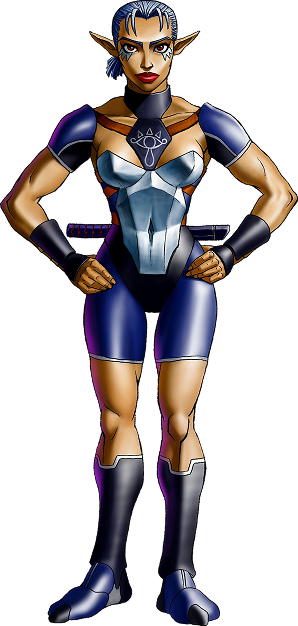
IMPA
Guarda-costas e cuidadora da Princesa Zelda, e uma das últimas sobreviventes da tribo Sheikah. Ela ensina a Canção de Ninar da Zelda à Link e ajuda a proteger a princesa. Ela desperta como a Sábia das Sombras, protegendo o Templo das Sombras.
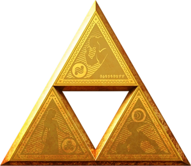
A TRIFORCEOs triângulos dourados sagrados deixados pelas três Deusas Douradas que criaram Hyrule. Cada peça representa uma virtude diferente.
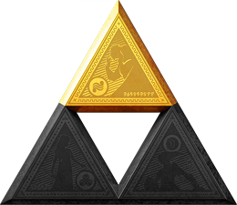
PODERMantido por Ganondorf
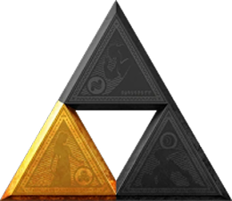
SABEDORIAMantido por Zelda
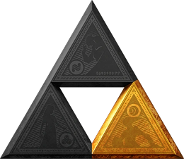
CORAGEMMantido por Link
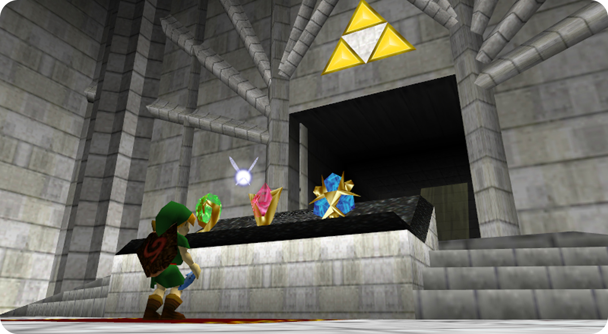